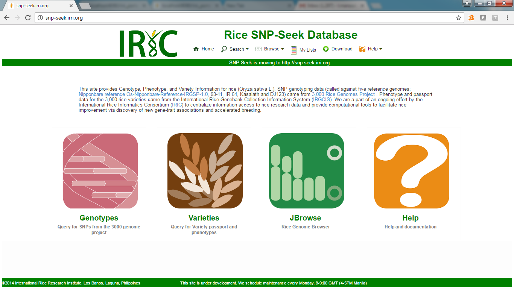

The home page displays the main entry points to search or browse the database. The main functionalities can be accessed by clicking the images, or items from the menu.

- Genotype - query for SNPs and Indels from the 3000 Genome Project called againts 5 reference rice genomes
- Variety - query for phenotypes and passport data for the 3024 resequenced varieties
- JBrowse - genome browser to display sequence and features for the reference genomes
- Help - this help and documentation
Main menu
- Search - SNPs, Varieties, Gene loci
- Browse
- Genome - Nipponbare, 93-11, IR64-21, Kasalath, DJ123
- Phylogenetic tree - K9, K12 groupings
- MDS Plot
- Genome alignments - pairwise alignment between the 5 references. Select the reference then the aligned reference.
- My Lists - manage lists of varieties, SNPs or Loci
- Download
Created with the Personal Edition of HelpNDoc: Easily create EBooks